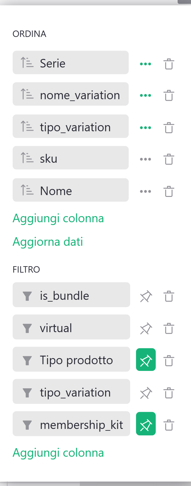
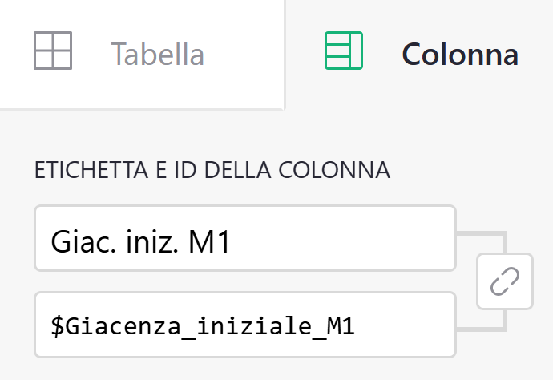

Guida 8
Muoversi in Grist
Versione del 13/09/2026 · Sistema «Magazzino LwM»
Questa guida non parla di magazzino, di ordini o di report: parla dei gesti che valgono in ogni pagina. Filtrare, ordinare, cercare, nascondere una colonna, esportare, cambiare il nome di qualcosa.
Le altre guide la citano ogni volta che una procedura passa di qui. È il posto dove quei rimandi trovano la risposta.
§1 In breve
C'è una cosa sola da capire prima di tutte le altre, e rende innocuo quasi tutto il resto: in Grist quello che fai su una pagina è temporaneo finché non premi «Salva».
Puoi filtrare, ordinare, nascondere colonne, spostarle, allargarle. Finché non salvi, stai cambiando solo quello che vedi tu in questo momento. Se hai combinato un pasticcio, ricarichi la pagina e torna tutto com'era.
Da qui la regola di questa guida: guarda quanto vuoi, salva solo quando sai perché.
Le eccezioni sono due, e sono le uniche cose in questo capitolo che fanno danno:
- i nomi delle colonne, perché sotto l'etichetta che leggi c'è un identificativo che usano formule e automatismi (sezione 9);
- le voci dei menu a tendina, che sembrano etichette ma sono valori, e che formule e automatismi confrontano parola per parola (sezione 10).
Nessuna delle due dà errore quando la sbagli.
| Se vuoi… | Sezione |
|---|---|
| Capire cosa resta e cosa no di quello che tocchi | 3 |
| Cambiare un filtro, e rimetterlo com'era | 4 |
| Sapere quali filtri non vanno toccati, pagina per pagina | 5 |
| Ordinare le righe | 6 |
| Cercare un ordine, uno SKU, un nome | 7 |
| Nascondere, spostare, allargare una colonna | 8 |
| Cambiare l'etichetta di una colonna senza rompere niente | 9 |
| Aggiungere una voce a un menu a tendina | 10 |
| Aggiungere o eliminare una riga, annullare l'ultima cosa fatta | 11 |
| Esportare o stampare quello che vedi | 12 |
| Vedere chi ha cambiato cosa, e quanto spazio resta | 13 |
§2 Dove sono le cose
Quattro zone dello schermo, e le useremo con questi nomi per tutta la guida.
A sinistra, l'elenco delle pagine. In fondo ci sono anche «Dati grezzi», che mostra le tabelle senza filtri (serve a guardare, non a lavorarci: guida 1), e «Storia documento», che è la sezione 13.
In alto, la barra del documento. La lente, che apre la casella «Cerca nel documento»; il menu di condivisione; e, all'estrema destra della pagina, il menu a tre puntini da cui si esporta e si stampa.
Sopra la tabella, la barra dei filtri. Ci stanno i bottoni dei filtri appuntati, e a destra l'icona «Sort and filter», che si accende in verde appena tocchi un filtro o un ordinamento. È la spia più importante di tutta la guida: verde significa «hai cambiato qualcosa e non l'hai salvato».
A destra, il pannello delle opzioni. Si apre e si chiude con l'icona in alto a destra. Ha una scheda per il riquadro (la tabella che stai guardando) e una per la colonna su cui hai il cursore. Quando una procedura dice «apri il pannello della colonna», è questa.
§3 Temporaneo o salvato
Le cose che puoi toccare in Grist stanno su tre piani diversi, e confonderli è il motivo per cui questa parte del programma mette soggezione.
┌─────────────────────────────────────────────────────┐
│ 1. QUELLO CHE VEDI TU, ADESSO │
│ filtri, ordinamento, colonne nascoste, │
│ larghezze │
│ → nessuno lo vede, si annulla ricaricando │
└─────────────────────────────────────────────────────┘
│ premi «Salva»
▼
┌─────────────────────────────────────────────────────┐
│ 2. LA PAGINA, PER TUTTI │
│ la stessa cosa, ma da adesso in poi │
│ → la vede anche Virginia, e resta │
└─────────────────────────────────────────────────────┘
┌─────────────────────────────────────────────────────┐
│ 3. IL DATO │
│ quello che c'è scritto nelle celle │
│ → non si tocca da qui: si scrive, o non si │
│ scrive affatto (guida 1) │
└─────────────────────────────────────────────────────┘
Il primo piano è tuo e non fa danni. Il secondo è condiviso: il documento lo aprite in due, e una pagina salvata in un certo modo è quella che troverà anche Virginia. Il terzo è un'altra cosa: filtrare non cancella niente, nascondere non elimina niente.
Come si torna indietro
Quando l'icona «Sort and filter» è verde, cliccandola trovi due comandi:
- «Salva» — al passaggio del mouse dice «Save sort & filter settings». Da quel momento la pagina è così per tutti.
- la freccia che torna indietro, accanto — «Revert sort & filter settings». Rimette la pagina com'era salvata.
E c'è una terza via, che è la più semplice: ricarica la pagina. Tutto quello che non hai salvato sparisce.
| Il gesto | Chi lo vede | Come si torna indietro |
|---|---|---|
| Cambi un filtro | Solo tu | La freccia, o ricarica |
| Salvi un filtro | Tutti, sempre | Rimetterlo a mano com'era, e risalvare |
| Ordini le righe | Solo tu | La freccia, o ricarica |
| Nascondi o allarghi una colonna | Solo tu, finché non salvi | La freccia, o ricarica |
| Cambi l'etichetta di una colonna | Tutti, subito | Si riscrive (sezione 9) |
| Rinomini una voce di un menu | Tutti, subito, e le formule si rompono | Sezione 10 |
| Elimini una riga | Tutti, subito | Non si torna indietro (sezione 11) |
Le ultime tre righe non passano dal pulsante «Salva»: valgono appena le fai.
Perché funziona così
Grist tiene separato il modo in cui guardi i dati dai dati stessi. È il motivo per cui puoi frugare in una pagina senza paura: nessun filtro, nessun ordinamento e nessuna colonna nascosta cambia un solo numero, né in magazzino né nei report.
È anche il motivo per cui i due report fiscali non si fidano dei filtri per le condizioni che contano: quelle stanno dentro le formule, che nessun clic può togliere (guida 1).
§4 Filtrare
Un filtro nasconde delle righe. Non le toglie, non le cancella: le lascia fuori dalla finestra.
Mettere un filtro
- Passa il mouse sull'intestazione della colonna e apri la freccetta del menu.
- Scegli «Filtra dati».
- Compare l'elenco dei valori presenti in quella colonna, ciascuno con la sua casella. Togli la spunta a quelli che non vuoi vedere, oppure clicca «Nessuno» e spunta solo quelli che ti interessano. «Tutto» li rimette tutti.
- Se i valori sono tanti, la casella di ricerca in cima all'elenco li filtra.
- Quando hai finito, «Close» chiude il pannellino.
Non c'è un pulsante «Applica»: il filtro agisce mentre clicchi, e «Close» chiude soltanto. L'unico gesto che impegna è «Salva» (sezione 3).
Filtri per intervallo
Sulle colonne di numeri e di date, invece dell'elenco dei valori trovi due caselle, da e a. Sulle date puoi scegliere anche un intervallo relativo a oggi — «quest'anno», «gli ultimi 30 giorni» — che si sposta da solo con il passare del tempo.
Ne hai uno già attivo: la maschera Inserimento Ordini mostra solo gli ordini dell'anno in corso. Se a gennaio devi inserire un ordine dell'anno prima, è questo il filtro da allargare, e poi da rimettere com'era (guida 3, sezione 7). Oppure, più semplice: allargalo, inserisci l'ordine, e ricarica la pagina senza salvare.
La puntina
Ogni filtro può stare in barra, come bottone sopra la tabella, oppure nel menu, cioè visibile solo aprendo il pannellino dei filtri della colonna. Si passa dall'uno all'altro con la puntina che compare nel pannellino del filtro (non ha scritte: è l'icona a forma di spillo).
§5 I filtri che definiscono una pagina
Alcuni filtri sono la pagina. Ordini Aperti è la tabella degli ordini più il filtro che tiene solo quelli aperti; Giacenze sono gli articoli meno i kit, i virtuali e i genitori delle magliette. Toglierli non mostra «qualcosa in più»: trasforma la pagina in un'altra cosa, che continua a mostrare numeri.
Oggi nel documento la divisione è pulita: i filtri che definiscono una pagina stanno tutti nel menu, e in barra ci sono solo quelli di comodo. Non è una garanzia — la puntina la può togliere e rimettere chiunque — ma è la situazione da cui si parte.
| Pagina | In barra, li cambi liberamente | Nel menu, non si toccano |
|---|---|---|
| Ordini Aperti | — | ordine aperto |
| Ordini | data | — |
| Righe_Ordine | trimestre, SKU | — |
| Movimenti di un articolo | SKU | — |
| Articoli | SKU, tipo prodotto | — |
| Bundle | kit | — |
| Giacenze | tipo prodotto, kit di appartenenza | kit, virtuali, genitori delle magliette |
| Giacenze T-Shirt | — | famiglie con almeno una t-shirt, righe senza nome |
| REPORT Corrispettivi | trimestre | giorni a totale zero |
| REPORT Art. 74 | trimestre | Art.74, esclusione dei kit |
| Report Fee Paypal | trimestre | giorni a totale zero |
| Resi in attesa di rientro | — | da ricevere, esclusione dei pezzi di kit |
| Resi senza righe | — | resi, senza righe |
| Resi di kit da esplodere | — | controllo dei kit da esplodere |
| Approvvigionamenti | — | carichi |
| Inserimento Ordini | anno in corso (vedi sezione 4) | — |
Le cinque viste di presidio — le tre dei resi, Ordini Aperti e Approvvigionamenti — hanno il filtro nel menu e niente in barra. Il vantaggio è che non si tolgono per sbaglio; lo svantaggio è che, guardando la pagina, non vedi scritto da nessuna parte perché quelle righe e non altre.
{kind=link}

§6 Ordinare
Dal menu dell'intestazione, la voce «Ordina», con la scelta fra crescente e decrescente. Se poi ordini una seconda colonna, questa si aggiunge alla prima invece di sostituirla: prima per serie, poi per nome.
Due differenze da Excel che vale la pena sapere:
- ordinare non cambia nessun calcolo. Le formule, le giacenze e i report non si accorgono di come guardi le righe;
- l'ordinamento è vivo. Se cambi il valore di una cella su cui stai ordinando, la riga si sposta da sola al posto giusto.
Per il resto vale la sezione 3: l'icona diventa verde, e o salvi o ricarichi.
§7 Cercare
La lente in alto, oppure Ctrl+F, apre la casella «Cerca nel documento». La x la chiude.
La ricerca non nasconde niente: sposta il cursore sulla prima cella che contiene quello che hai scritto, e a ogni passaggio va alla successiva. Quando le corrispondenze nella pagina finiscono, passa alla pagina dopo. Se ti ritrovi improvvisamente altrove, non hai cliccato niente per sbaglio: è la ricerca che ha cambiato pagina.
Serve soprattutto per tre cose: trovare un ordine dal suo numero, controllare se uno SKU esiste già (guida 5, sezione 7), ritrovare un prodotto di cui ricordi il nome ma non il codice.
Quando invece vuoi vedere insieme tutte le righe che riguardano una cosa sola, la ricerca non basta: serve un filtro. Per i movimenti di un articolo c'è già una pagina apposta, con il filtro dello SKU in barra (guida 6, sezione 9).
§8 Le colonne
Dal menu dell'intestazione: «Nascondi colonna» la toglie da questa pagina. Per rimetterla, apri il pannello di destra sulla scheda del riquadro: le colonne nascoste sono elencate lì e si riportano fra le visibili.
Le colonne si spostano trascinandole per l'intestazione, si allargano trascinandone il bordo, e dallo stesso menu si possono bloccare le prime, quelle che restano ferme mentre scorri verso destra.
Tutto questo è roba della sezione 3: tua, finché non salvi.
Le colonne con lo sfondo grigio si possono nascondere come tutte le altre, ma non si scrivono: il grigio è il divieto (guida 0, sezione 8).
§9 Cambiare l'etichetta di una colonna
Ogni colonna ha due nomi: l'etichetta, che leggi in cima, e l'identificativo, che è il nome con cui la chiamano le formule e gli automatismi. Normalmente i due si muovono insieme, ed è questo il problema: rinominare una colonna cambia anche l'identificativo, e tutto ciò che ci puntava smette di funzionare in silenzio.
L'etichetta però si può cambiare da sola, ed è un'operazione sicura. Si fa così:
- Apri il menu dell'intestazione e scegli «Opzioni colonna». Si apre il pannello di destra sulla scheda della colonna.
- In cima c'è la sezione «ETICHETTA E ID DELLA COLONNA», con due campi: sopra l'etichetta, sotto l'identificativo.
- Fra i due c'è un'icona a forma di catena, senza scritte. Cliccala: la catena si spezza, e da quel momento i due nomi sono indipendenti.
- Scrivi il nome nuovo solo nel campo di sopra.
- Controlla che il campo di sotto sia rimasto esattamente com'era.
Il passo 5 non è pignoleria: è l'unico modo di accorgersi subito se il passo 3 non ha funzionato.
L'identificativo non è tuo. Se un identificativo va cambiato davvero — capita, ma raramente — è un intervento di Paolo, che prima controlla quali formule e quali scenari citano quel nome.
{kind=link}

§10 I menu a tendina
Le voci di un menu a tendina sembrano etichette. Non lo sono: sono valori, scritti dentro ogni riga e confrontati parola per parola dalle formule. Il magazzino di un ordine non contiene «il primo magazzino»: contiene la stringa M1. Interno.
I menu di questo documento sono di tre tipi.
| Tipo | Quali | Cosa puoi fare |
|---|---|---|
| Letti dalle formule | magazzino, stato, tipo di record, tipo prodotto, taglia, serie | Niente: né rinominare né eliminare voci |
| Letti dalle formule e scritti dagli automatismi | stato, tipo di record | Ancora meno: il danno arriverebbe da due parti insieme |
| Liberi | canale | Aggiungere voci quante ne vuoi |
La regola, in una riga: aggiungere una voce sì, rinominarne una mai.
Aggiungere una voce a un menu libero
Serve per il canale, se ti fa comodo tenere traccia della provenienza di un carico — la tipografia, il fornitore dei gadget (guida 6, sezione 5).
- Mettiti su una cella di quella colonna e apri «Opzioni colonna».
- Nel pannello di destra, accanto all'elenco delle scelte, clicca «Edit».
- Scrivi la voce nuova nel campo in fondo all'elenco e premi Invio.
- Salva.
Più veloce ancora: scrivi il valore nuovo direttamente nella cella, e Grist ti propone di aggiungerlo all'elenco.
Perché funziona così — e perché con gli automatismi è peggio
Su due di questi menu, lo stato e il tipo di record, non scrive solo Grist: scrive anche Make. Gli scenari mandano parole precise — Ordine, Reso, Rimborsato, Completato — perché sono quelle che hanno trovato quando sono stati costruiti.
Se una di quelle voci venisse rinominata, gli ordini che arrivano dal sito continuerebbero ad arrivare con la parola vecchia, che a quel punto non è più una scelta valida. Il danno entrerebbe da fuori, a ogni ordine nuovo, senza che nessuno abbia più toccato niente.
§11 Righe: aggiungere, eliminare, annullare
Aggiungere. In fondo a ogni tabella c'è una riga vuota: scrivere lì crea una riga nuova. Per gli ordini, però, la strada giusta non è questa ma la maschera Inserimento Ordini (guida 3).
Eliminare. Dal menu della riga, a sinistra. La riga sparisce dalla tabella e da tutte le pagine, e non c'è modo di rimetterla dov'era.
Annullare l'ultima cosa fatta. Ctrl+Z recupera quello che hai appena fatto tu, subito dopo averlo fatto. Trattalo come un ripensamento immediato, non come una rete di sicurezza: non contarci per rimediare a qualcosa fatto ieri, né per annullare le modifiche di un'altra persona. Per quello c'è la sezione 13, e in ultima istanza Paolo.
§12 Esportare e stampare
Dal menu a tre puntini in alto a destra della pagina:
- «Scarica come XLSX» — il formato da preferire;
- «Scarica come CSV» — da evitare quando i numeri contano: il CSV usa il punto decimale, ed Excel in italiano legge
12.30come milledodici; - «Widget di stampa» — stampa il riquadro che stai guardando. Su una pagina con più riquadri, come la maschera di inserimento, stampa solo quello selezionato.
Quello che esce è esattamente quello che vedi: solo le righe che passano i filtri, solo le colonne visibili, nell'ordine in cui sono. Se prima di esportare nascondi due colonne, nel file non ci sono.
Per la conta del magazzino, la strada è questa: filtra Giacenze su quello che stai per contare, poi stampa o esporta (guida 6, sezione 7).
Per i due report fiscali la procedura completa — controllo dei filtri, export, pulizia del file — sta nella guida 7, sezione 7, insieme all'avvertenza sull'altro comando di esportazione, quello del menu di condivisione, che scarica l'intero documento senza filtri e non va usato per i report.
Quello stesso comando ha però un uso giusto, ed è l'unico: la copia di sicurezza trimestrale, dove scaricare tutto senza filtri è esattamente quello che serve (guida 9, sezione 2).
§13 Chi ha cambiato cosa, e quanto spazio resta
La storia del documento
Nel pannello di sinistra, «Storia documento» apre due schede:
- «Attività» elenca le modifiche recenti, con chi le ha fatte. Siccome tu e Virginia entrate con due account diversi, qui si distingue. Di base mostra la tabella che stai guardando; una casella permette di vedere tutte le tabelle insieme.
- «Snapshot» sono le copie complete del documento che Grist salva da sé. Sul piano gratuito si torna indietro di 30 giorni.
«Attività» è il posto giusto da guardare quando un numero non torna e non capisci perché: spesso la risposta è una modifica di cui nessuno si ricorda. Riportare il documento a uno snapshot, invece, è un'operazione da consulente — si chiama Paolo, e prima dei 30 giorni.
Il limite dei record
Il piano gratuito tiene 5.000 righe in tutto il documento, non per tabella. Il conteggio si legge in «Dati grezzi», dove ogni tabella è elencata con il suo numero di righe.
Ai volumi attuali le vendite consumano poco: fra testate e righe, un anno di ordini vale qualche centinaio di righe. La voce grossa è Prodotti, che da sola ne occupa circa 1.200 — ed è la tabella che il sistema non usa per funzionare (guida 5, sezione 3). Se un giorno lo spazio stringesse, è da lì che si comincerebbe.
Vale la pena dare un'occhiata a quel numero quando si preparano i report del trimestre, insieme agli altri due controlli che si fanno in quell'occasione (guida 9, sezione 2). Non è un'emergenza: è che il limite, quando arriva, arriva senza preavviso.
§14 Cosa è tuo e cosa non si tocca
| Tuo, senza pensarci | Non si tocca |
|---|---|
| Filtri, anche salvarli | Gli identificativi delle colonne |
| Ordinamenti | Le voci dei menu che formule e automatismi leggono |
| Nascondere, spostare, allargare colonne | «Elimina colonna» |
| Cambiare un'etichetta, con la catena spezzata | Le formule |
| Aggiungere voci a un menu libero | «Aggiorna dati» |
| Cercare, esportare, stampare | Le impostazioni del documento e i collegamenti con Make |
| Guardare «Dati grezzi» e «Storia documento» | Eliminare tabelle o pagine; ripristinare uno snapshot |
La colonna di destra ha una cosa in comune: nessuna di quelle azioni dà un messaggio d'errore. È il motivo per cui stanno in un elenco invece che in un lucchetto.
§15 Se qualcosa va storto
| Sintomo | Dove guardare |
|---|---|
| Una pagina mostra meno righe del solito | Sezione 4, e la tabella della sezione 5 |
| Una vista di presidio è vuota e non ti fidi | Sezione 5 |
| Hai cambiato qualcosa e non sai cosa | Ricarica la pagina (sezione 3) |
| Hai salvato un filtro per sbaglio | Rimettilo com'era con la tabella della sezione 5, e risalva |
| Una colonna è sparita | Sezione 8: probabilmente è nascosta, non eliminata |
| Ti sei ritrovata su un'altra pagina | Sezione 7: è la ricerca |
| Un numero è diventato zero dopo che qualcuno ha rinominato qualcosa | Sezione 10, e chiama Paolo |
| Non capisci chi ha cambiato cosa | Sezione 13 |
§16 Dove si continua
| Se vuoi… | Guida |
|---|---|
| Capire come sono fatte le pagine e perché i filtri sono quelli | 1 |
| Inserire o correggere un ordine, annullarne uno | 3 |
| Chiudere un reso | 4 |
| Controllare se un articolo esiste già, creare un kit | 5 |
| Leggere le giacenze, preparare una conta | 6 |
| Scaricare i report per il commercialista | 7 |
| Capire perché qualcosa non funziona, o cosa segnalare a Paolo | 9 |